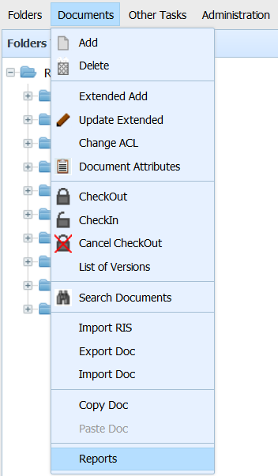
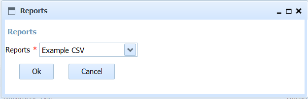

This option allows you to choose a type of Report and generate it, with the data of the documents contained directly (in the first level) in the current folder (as long as the user has read permission on them).
You must be placed in the chosen folder and click on the menu item "Documents -> Report". This action presents a form with the list of available reports. After choosing the report and pressing OK, the chosen report will be generated from the documents contained in the current folder and downloaded.

